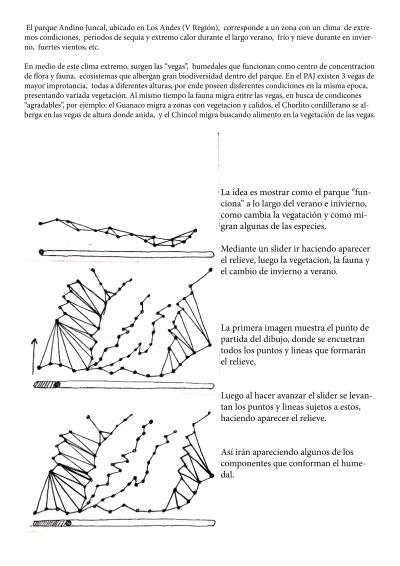

Experimentaciones
Primeros intentos
- elemento1
- elemento2
- elemento3
Proyecto
El parque Andino Juncal, ubicado en Los Andes (V Región), corresponde a un zona con un clima de extremos condiciones, periodos de sequía y extremo calor durante el largo verano, frío y nieve durante en invierno, fuertes vientos, etc. En medio de este clima extremo, surgen las “vegas”, humedales que funcionan como centro de concentracion de flora y fauna, ecosistemas que albergan gran biodiversidad dentro del parque. En el PAJ existen 3 vegas de mayor improtancia, todas a diferentes alturas, por ende poseen disferentes condiciones en la misma epoca, presentando variada vegetación. Al mismo tiempo la fauna migra entre las vegas, en busca de condicones “agradables”, por ejemplo: el Guanaco migra a zonas con vegetacion y calidos, el Chorlito cordillerano se alberga en las vegas de altura donde anida, y el Chincol migra buscando alimento en la vegetación de las vegas.
.jpg "proyecto juncal")
La idea es mostrar como el parque “funciona” a lo largo del verano e inivierno, como cambia la vegatación y como migran algunas de las especies. Mediante un slider ir haciendo aparecer el relieve, luego la vegetacion, la fauna y el cambio de invierno a verano. La primera imagen muestra el punto de partida del dibujo, donde se encuetran todos los puntos y lineas que formarán el relieve, Luego al hacer avanzar el slider se levantan los puntos y lineas sujetos a estos, haciendo aparecer el relieve. Así irán apareciendo algunos de los componentes que conforman el humedal.
